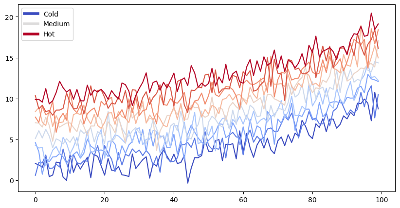

# Content with notebooks
You can also create content with Jupyter Notebooks. This means that you can include
code blocks and their outputs in your book.
## Markdown + notebooks
As it is markdown, you can embed images, HTML, etc into your posts!

You can also $add_{math}$ and
$$
math^{blocks}
$$
or
$$
\begin{aligned}
\mbox{mean} la_{tex} \\ \\
math blocks
\end{aligned}
$$
But make sure you \$Escape \$your \$dollar signs \$you want to keep!
## MyST markdown
MyST markdown works in Jupyter Notebooks as well. For more information about MyST markdown, check
out [the MyST guide in Jupyter Book](https://jupyterbook.org/content/myst.html),
or see [the MyST markdown documentation](https://myst-parser.readthedocs.io/en/latest/).
## Code blocks and outputs
Jupyter Book will also embed your code blocks and output in your book.
For example, here's some sample Matplotlib code:
Cell In[1], line 3
You can also create content with Jupyter Notebooks. This means that you can include
^
SyntaxError: invalid syntax
from matplotlib import rcParams, cycler
import matplotlib.pyplot as plt
import numpy as np
plt.ion()
<contextlib.ExitStack at 0x7f8c1b7368d0>
# Fixing random state for reproducibility
np.random.seed(19680801)
N = 10
data = [np.logspace(0, 1, 100) + np.random.randn(100) + ii for ii in range(N)]
data = np.array(data).T
cmap = plt.cm.coolwarm
rcParams['axes.prop_cycle'] = cycler(color=cmap(np.linspace(0, 1, N)))
from matplotlib.lines import Line2D
custom_lines = [Line2D([0], [0], color=cmap(0.), lw=4),
Line2D([0], [0], color=cmap(.5), lw=4),
Line2D([0], [0], color=cmap(1.), lw=4)]
fig, ax = plt.subplots(figsize=(10, 5))
lines = ax.plot(data)
ax.legend(custom_lines, ['Cold', 'Medium', 'Hot']);

#
import dropbox
from dropbox.exceptions import AuthError
DROPBOX_ACCESS_TOKEN = 'sesjqag31a2c26u'
try:
dbx = dropbox.Dropbox(DROPBOX_ACCESS_TOKEN)
except AuthError as e:
print('Error connecting to Dropbox with access token: ' + str(e))
dbx
---------------------------------------------------------------------------
ModuleNotFoundError Traceback (most recent call last)
Cell In[4], line 2
1 #
----> 2 import dropbox
3 from dropbox.exceptions import AuthError
5 DROPBOX_ACCESS_TOKEN = 'sesjqag31a2c26u'
ModuleNotFoundError: No module named 'dropbox'
There is a lot more that you can do with outputs (such as including interactive outputs) with your book. For more information about this, see the Jupyter Book documentation